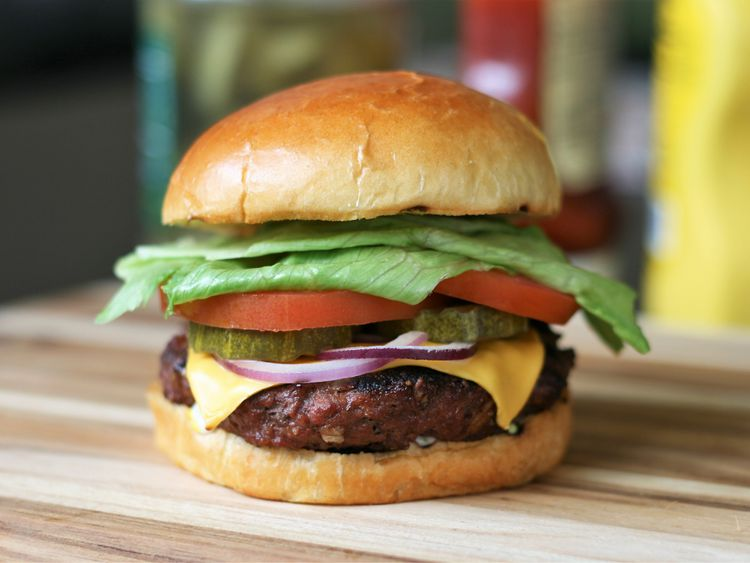

Burger

Description
A burger is a sandwich made with a ground meat patty, bread, and toppings.
The hamburger as we know it today was invented between 1885 and 1904, and became popular in the early 20th century.
Ingredients
- Bun
- Ketchup
- Onions
- Pickles and Tomatoes
- Cheese
- Patty
Steps
- Preheat an outdoor grill for high heat and lightly oil grate.
- Whisk egg, salt, and pepper together in a medium bowl.
- Add ground beef and bread crumbs; mix with your hands or a fork until well blended.
- Form into four 3/4-inch-thick patties.
- Place patties on the preheated grill. Cover and cook 6 to 8 minutes per side, or to desired doneness. An instant-read thermometer inserted into the center should read at least 160 degrees F (70 degrees C).
- Add the toppings to bun along with the patty
- Serve hot and enjoy!